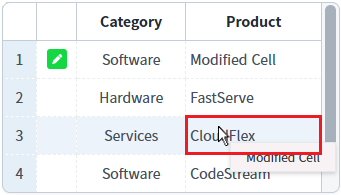
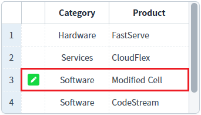
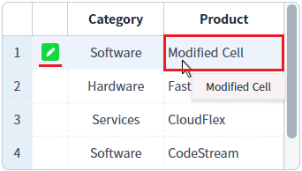
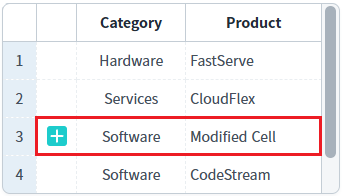
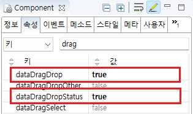

[GridView] 마우스 DragDrop 기능을 통해 GridView 내 이동된 행의 rowStatus(상태)값 유지하기
1개요
GridView의 'dataDragDropStatus' 속성을 사용하여, 마우스로 드래그 앤 드롭하여 이동된 행의 상태(rowStatus)값이 유지되도록 설정한 예제입니다. 이 속성을 'true'로 설정하면, 드래그 앤 드롭으로 GridView 내부에서 행을 이동해도 'rowStatus'(행 상태)가 변경되지 않습니다.
다른 GridView의 행이 Drop된 경우는 "dataDragDropStatus" 설정과 무관하게 "C"(신규) 상태로 변경됩니다.
2구현된 기능
드래그 앤 드롭으로 행 이동 시, 행 상태(rowStatus) 유지
(기본 설정) 드래그 앤 드롭으로 행 이동 시, 행 상태(rowStatus)를 신규로 설정
3예제 테스트 방법
3.1드래그 앤 드롭으로 행 이동 시, 행 상태(rowStatus) 유지
GridView 내에서 드래그 앤 드롭으로 행을 이동했을 때 rowStatus가 변경되지 않는 것을 확인합니다.
예제 영역 '드래그 앤 드롭으로 행 이동 시, 행 상태(rowStatus) 유지'의 GridView에서 테스트합니다.
테스트를 위해 화면 로딩 후, 첫 번째 행의 'Product'을 'Modified Cell'로 변경한 상태입니다.1
STEP 1: GridView의 첫 번째 행의 "Product"에 해당하는 셀을 드래그합니다.
해당 셀은 수정 상태입니다.
Image 1.브라우저(Chrome) 실행 예시

2
STEP 2: GridView의 첫 번째 행을 드래그하여 세 번째 행에 드롭합니다.
Image 2.브라우저(Chrome) 실행 예시

3
STEP 3: 실행 결과를 확인합니다.
이동된 행의 rowStatus값이 변경되지 않습니다.
Image 3.브라우저(Chrome) 실행 예시

3.2(기본 설정) 드래그 앤 드롭으로 행 이동 시, 행 상태(rowStatus)를 신규로 설정
GridView 내에서 드래그 앤 드롭으로 행을 이동했을 때 rowStatus가 "C"(신규)로 변경되는 것을 확인합니다.
예제 영역 '(기본 설정) 드래그 앤 드롭으로 행 이동 시, 행 상태(rowStatus)를 신규로 설정'의 GridView에서 테스트합니다.
테스트를 위해 화면 로딩 후, 첫 번째 행의 'Product'을 'Modified Cell'로 변경한 상태입니다.1
STEP 1: GridView의 첫 번째 행의 "Product"에 해당하는 셀을 드래그합니다.
해당 셀은 수정 상태입니다.
Image 4.브라우저(Chrome) 실행 예시

2
STEP 2: GridView의 첫 번째 행을 드래그하여 세 번째 행에 드롭합니다.
Image 5.브라우저(Chrome) 실행 예시
3
STEP 3: 실행 결과를 확인합니다.
이동된 행의 rowStatus값이 "C"(신규)로 변경됩니다.
Image 6.브라우저(Chrome) 실행 예시

4구현 예시
GridView와 연결된 DataList 생성 및 연결 방법은 생략되었습니다.
4.1드래그 앤 드롭으로 행 이동 시, 행 상태(rowStatus) 유지 여부 설정하기
GridView의 속성을 정의합니다.
[필수] dataDragDrop="true"
[default:false, true] 동일 gridView 또는 서로 다른 gridView 간의 데이터 드래그 앤 드롭을 허용
[필수] dataDragDropStatus="true"
[default:false, true] 데이터를 드래그 앤 드롭을 통해 이동시켰을 때 rowStatus를 유지
Image 7.웹스퀘어 스튜디오의 Component View - 속성 설정 예시

Example 1.Source
<!-- gridView 의 소스 본문 예시 --> <w2:gridView dataDragDrop="true" dataDragDropStatus="true" dataList="data:dlt_exam_1"> <!-- 중략 --> </w2:gridView>
5주요 API
dataDragDrop
dataDragDropStatus